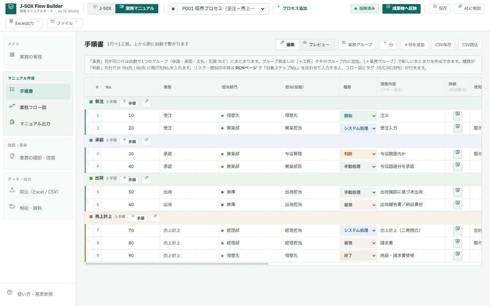
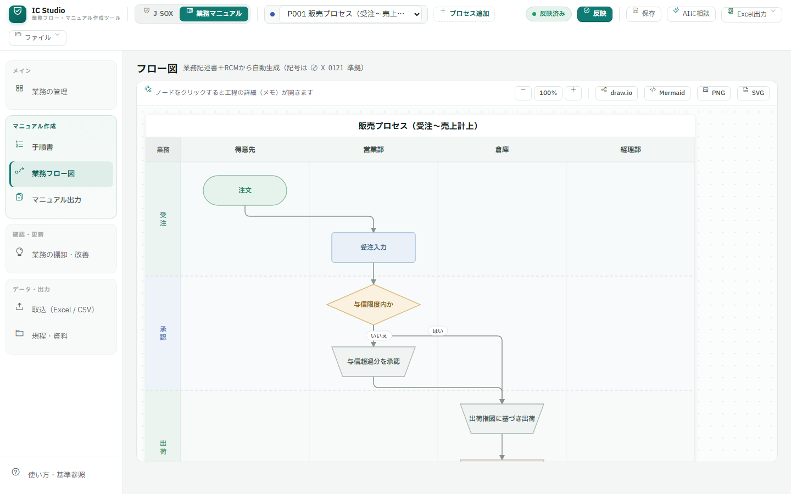
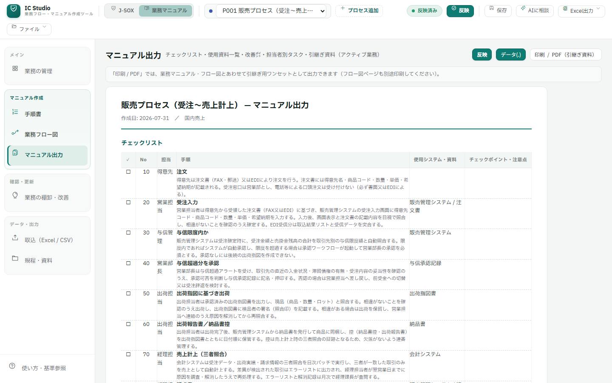
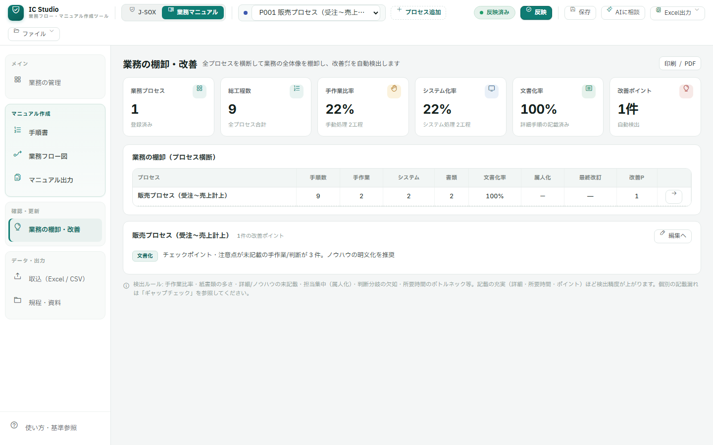

手順を表に入力するだけで、業務フロー図・手順書・チェックリスト・引継ぎ資料まで自動生成。「あの人しか分からない仕事」をなくすための無料ツールです。
公認会計士が開発。インストール不要。入力した業務データはアプリから外部サーバーへ送信しません。
操作画面はPC向けです。スマートフォンでは概要と操作例をご覧いただけます。
中小企業・士業事務所・バックオフィスで、毎日のように起きていることです。
担当者が休む・辞めると業務が止まる。頭の中にしかない手順がある
異動・退職のたびに口頭とメモで引継ぎ。抜け漏れが必ず起きる
作った手順書が更新されず、実態と合っていない。直すのも大変
Wordで一から書くのは重すぎて、結局後回しになっている
文章を書くのではなく、手順を1行ずつ表に入力するだけ。フロー図もマニュアルも同じデータから自動で作られるので、直すのも1か所です。
1行＝1手順。担当・使用資料・注意点も。テンプレート（請求書発行・入金確認・経費精算など）からも開始できます
部署ごとのスイムレーン図が自動で描かれます。作図作業はゼロ
手順書・チェックリスト・担当者別タスク・引継ぎ資料を印刷/Excelへ
属人化・記載漏れ・手作業の多さを自動検出。改善ポイントが見える
図形はJIS X 0121の記号体系を参考にした表示記号です
クリック（タップ）で拡大できます。すべて現行バージョンの実機画面・サンプルデータです。




上場準備・J-SOX対応が必要になったら。作成した工程データを基礎として「J-SOXモード」へ発展できます（リスク・統制などの追加設定が必要です）。マニュアル整備が、内部統制文書化の第一歩になります。
「請求書を発行する」「入金を確認する」— 小さな業務1つから始めるのがおすすめです。